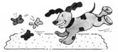
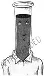

TO YOUR HEALTH
By the editors of American Health magazine.
When it concerns the fitness of body, mind or spirit, the editors at American Health are there, staying on top of up-to-date medical research, separating fads from facts, and helping you preserve and improve life's most precious gift - your good health. In this new column, we bring you just a few items culled from their current and upcoming issues, which - among a mass of other information - focus in on a healthy heart.
Halting Heart Attacks
New techniques and drugs are enabling doctors to literally halt a heart attack in progress, thereby limiting cardiac damage and improving chances for recovery. Most heart attack victims, however, wait three hours before seeking help. By that time, as much as 40% of the affected heart muscle may be lost.
Classic symptoms of a heart attack include crushing chest pain that radiates to the jaw or left arm (and isn't relieved by rest). It's often accompanied by nausea, apprehension or dizziness. Sometimes there may be only a heavy pressure or constriction across the chest. There may be real pain of varying degree, which may or may not radiate to the shoulder, neck, jaw, teeth, belly or arm.
Six Going on 40
The old one-dog-year-equals-seven-people-years formula is "total nonsense," according to Dr. Alan Beck at the University of Pennsylvania School of Veterinary Medicine. More accurate guidelines were developed in 1953 by French veterinarian A. LeBeau, but keep in mind that large breeds of dogs have much shorter life spans than smaller breeds: 3 mos. = 5 yrs.; 6 mos. = 10 yrs.; 12 mos. = 15 yrs.; 2 yrs. = 24 yrs.; 4 yrs. = 32 yrs.; 6 yrs. = 40 yrs.; 8 yrs. = 48 yrs.; 10 yrs. = 56 yrs.; 14 yrs. = 72 yrs.; 18 yrs. = 91 yrs.; 21 yrs. = 106 yrs.
You can equate a cat's age to human age by this same guideline.
Victory Over Viruses?
A Harris poll of 227 medical scientists reveals that nearly 90% expect there'll be effective drugs to stimulate the immune system, and 95% believe antiviral drugs will be used effectively by the year 2000.
Is a Winter Tan Worth It?
Last year, the FDA reports, tanning salons sent some 2,500 to 5,000 people to emergency rooms with radiation injuries. Though much of the public thinks UVA (ultraviolet A rays) artificial tanning is safe, some of the machines give out five times as much energy per unit of time as the sun, and animal studies suggest you're more likely to develop skin cancer if you use lamps plus sun than if you tan in the sun alone.
Thin and Happy
If you're down about being overweight, taking an antidepressant may compound the problem, because antidepressants seem to stimulate weight-gain in some people. Some drugs used to treat allergies, arthritis, skin diseases and collagen disorders have similar effects, but antidepressants are the worst offenders.
Now, however, there's an experimental antidepressant drug, fluoxetine, that actually decreases cravings for sweets and may prove to be an effective weight-loss agent as well, but researchers are cautious. Bupropion, another drug that seemed to lift depression without causing fatigue or weight gain, was later found to induce seizures. In the meantime, regular aerobic exercise has been shown to be as effective in the treatment of mild depression as drugs, and will also help take off unwanted pounds.
Cholesterol Testing
Everyone over the age of 20 should have a cholesterol test, but, remember, like blood pressure, a person's cholesterol level fluctuates-up or down-with stress, weight change, menstrual cycle, illness and medications.
While lovastatin, the first of a new class of cholesterol-lowering drugs, can reduce heartunhealthy cholesterol levels by 40%, its effect on coronary heart disease and its longterm safety have not yet been established. This and other drugs should be used only after a stringent diet that cuts down on fatty foods has failed. Getting the level down is vital, though, since every 1% drop in serum cholesterol can lead to a 2% reduction in heart attack risk.
Kids, Diet and Heart Disease
A 15-year study in Bogalusa, Louisiana, is trying to determine to what extent childhood lifestyle can contribute to eventual heart problems. "We have found that heart disease risk factors track quite well as a child grows older," says Larry Weber, chief statistician for the study. "This causes us to believe that things like obesity and high blood pressure are not harmless in youth, but in fact can contribute to heart disease later in life."
Unfortunately, the number of obese children in this country has almost doubled between 1963 and 1980.
|
|
 |
 |
|
|
|
|